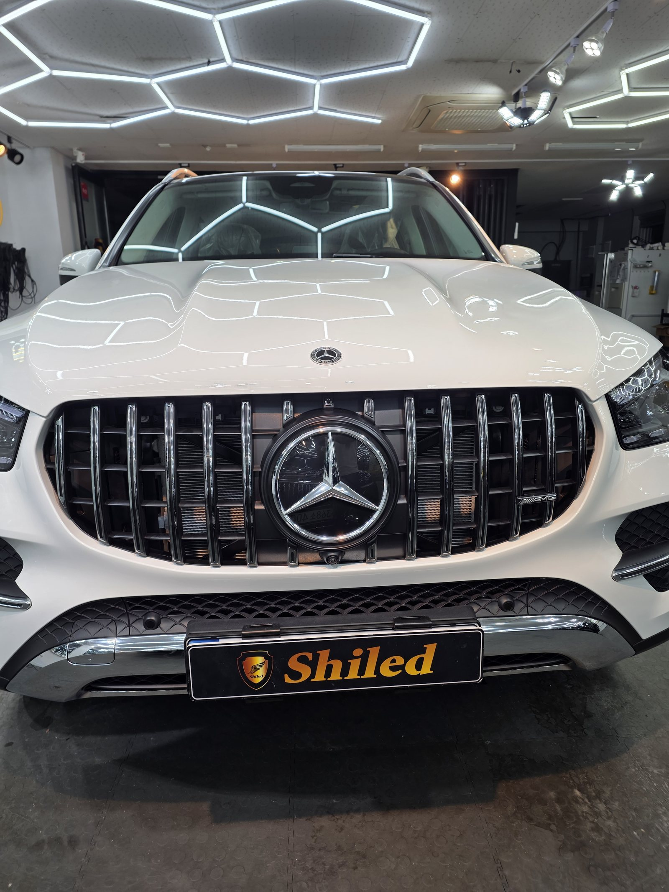
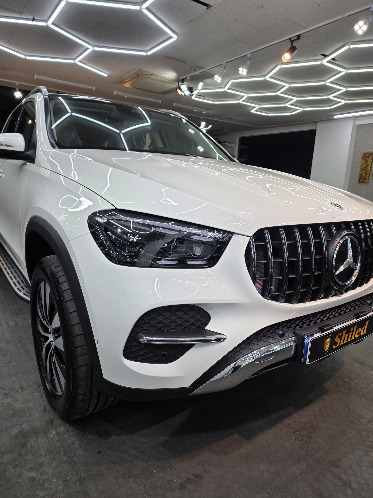
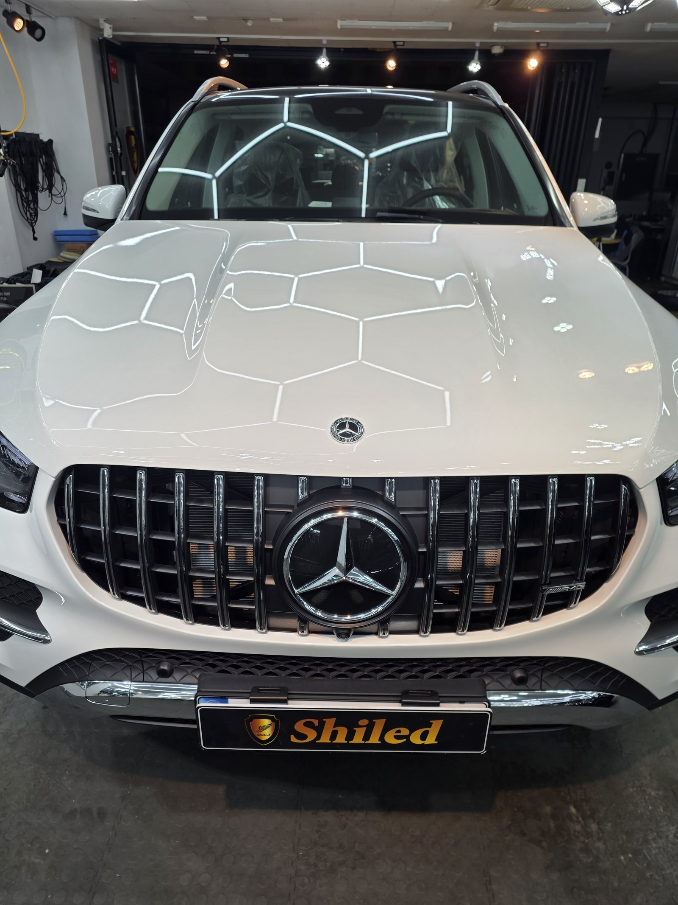
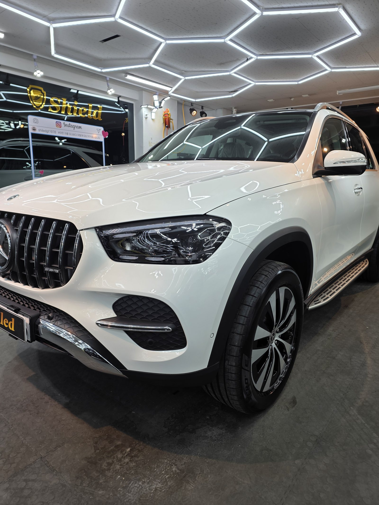
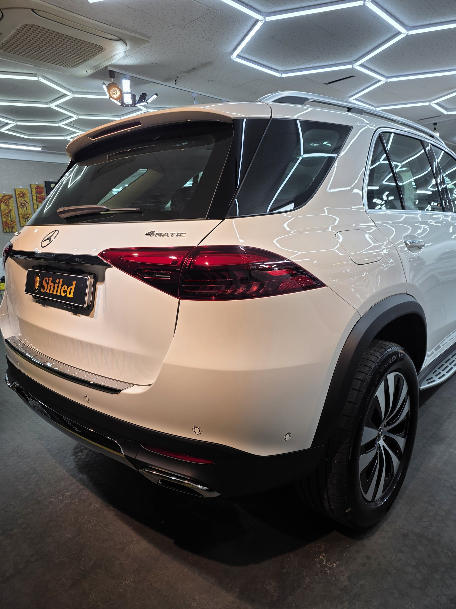
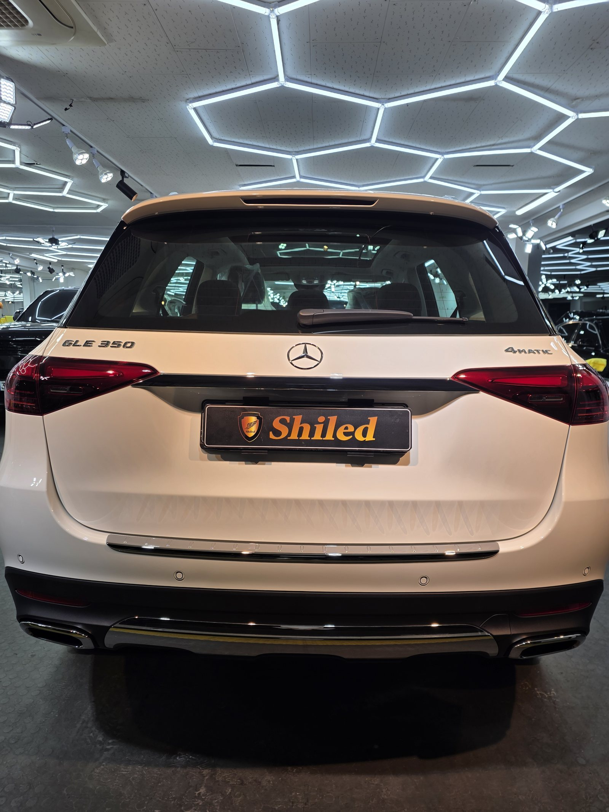
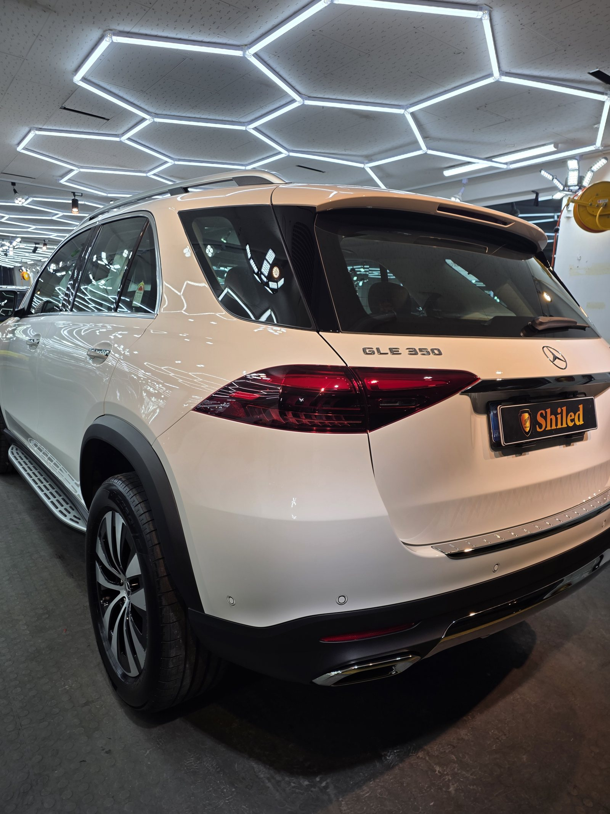
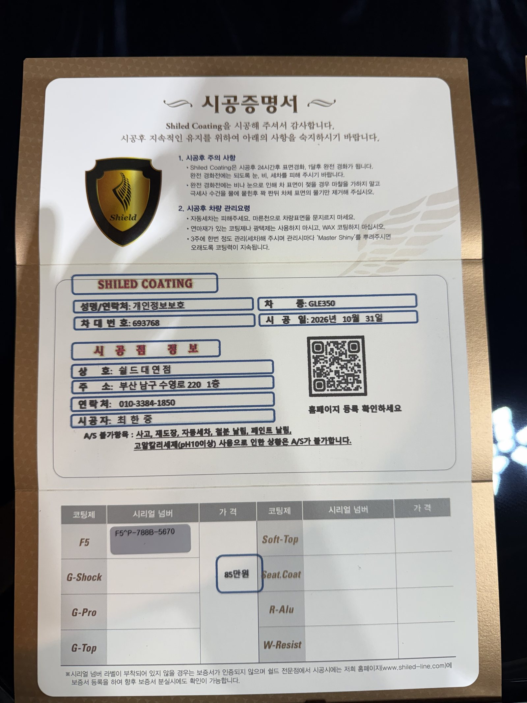

벤츠 GLE350, 백색 신차입니다.
세로줄이 들어간 파나메리카나 그릴 구성입니다.
출고 전 F5로 진행한 부산 유리막코팅 기록입니다.

육각 조명은 왜 쓰나요?
어느 방향의 잔기스든 걸러내기 위해서입니다.
조명 선이 한 방향뿐이면 그 선과 나란한 상처는 보이지 않습니다.
육각 조명은 선이 여러 방향으로 교차합니다.
그래서 보닛 위에 비친 육각 무늬가 끊기지 않고 이어지는지만 보면 됩니다.
흰 차는 특히 이 무늬를 기준점으로 삼습니다.


큰 SUV는 뭐가 다른가요?
GLE는 보닛과 루프가 모두 넓습니다.
면적이 넓을수록 바른 코팅제가 마르기 전에 닦아내야 할 구간이 길어집니다.
한 번에 넓게 펴 바르면 끝까지 가기 전에 굳습니다.
그래서 면을 더 잘게 나눠 끊어가며 작업했습니다.
사이드스텝은 도장된 측면만 올리고, 발이 닿는 윗면은 그대로 뒀습니다.




기술자의 팁
사이드스텝 윗면은 신발이 매일 닿는 자리라 코팅을 올려도 금방 닳습니다. 그 면은 코팅 효과를 기대하기보다, 흙이 쌓이기 전에 자주 닦아내시는 게 낫습니다.
백색 GLE350에 F5를 올린 이유
F5는 색감의 깊이와 글로시함에 특화된 코팅입니다.
흰색은 색감보다 표면의 매끈함에서 차이가 납니다.
F5를 올리면 면이 미끄러워져 오염이 덜 붙고, 세차 때 더 쉽게 떨어집니다.
차가 큰 만큼 세차 부담도 큽니다. 그 부담을 줄이는 쪽이 실익이 큽니다.
코팅제는 대표가 직접 개발·제조한 제품입니다.
이번 부산 유리막코팅은 F5 싱글로 진행했습니다.
시공증명서도 함께 드립니다
모든 시공 차량에 시공증명서를 드립니다.
차종·시공일·코팅제 시리얼 번호가 적혀 있고, 홈페이지에 등록해 보증을 받으실 수 있습니다.

차종·시공일·코팅제 시리얼이 기재된 시공증명서
자주 묻는 질문
Q. 육각 조명은 왜 쓰나요?
A. 선이 여러 방향으로 교차하는 조명이라 어느 각도의 잔기스든 걸립니다. 한 방향 조명만으로는 그 방향과 나란한 상처가 숨습니다.
Q. 큰 SUV는 코팅에 시간이 더 걸리나요?
A. 걸립니다. 면적이 넓을수록 바른 부분이 마르기 전에 닦아내야 할 구간이 길어져, 면을 더 잘게 나눠 작업합니다.
Q. 사이드스텝도 코팅하나요?
A. 발이 닿는 윗면은 코팅을 올려도 금방 닳습니다. 도장된 측면은 코팅하고, 밟는 면은 따로 관리하시는 편이 낫습니다.
Q. 왜 출고 전에 코팅하나요?
A. 도장면이 가장 깨끗할 때 올린 코팅이 가장 오래갑니다. 운행과 세차로 잔기스가 생기기 전에 입혀두는 것이 핵심입니다.
Q. 쉴드광택 위치와 예약은 어떻게 하나요?
A. 부산 남구 유엔로220 1F 쉴드광택입니다. 예약·상담은 010-3384-1850, 대표 최한중이 직접 상담하고 책임 시공합니다.
새 차일수록 시작점이 다릅니다. 가장 깨끗할 때 입혀두십시오.
제품을 직접 만드는 사람이 직접 시공합니다.
부산에서 신차 유리막코팅을 고민 중이시면 편하게 연락 주십시오.
어떤 차를 타냐보다 어떻게 타냐가 중요합니다~!
시공 중에는 전화를 받지 못할 때가 많습니다.
카카오톡으로 차종과 원하시는 시공을 남겨주시면 확인 후 답변드립니다.
쉴드광택 · 부산 남구 유엔로220 1F · 대표 최한중